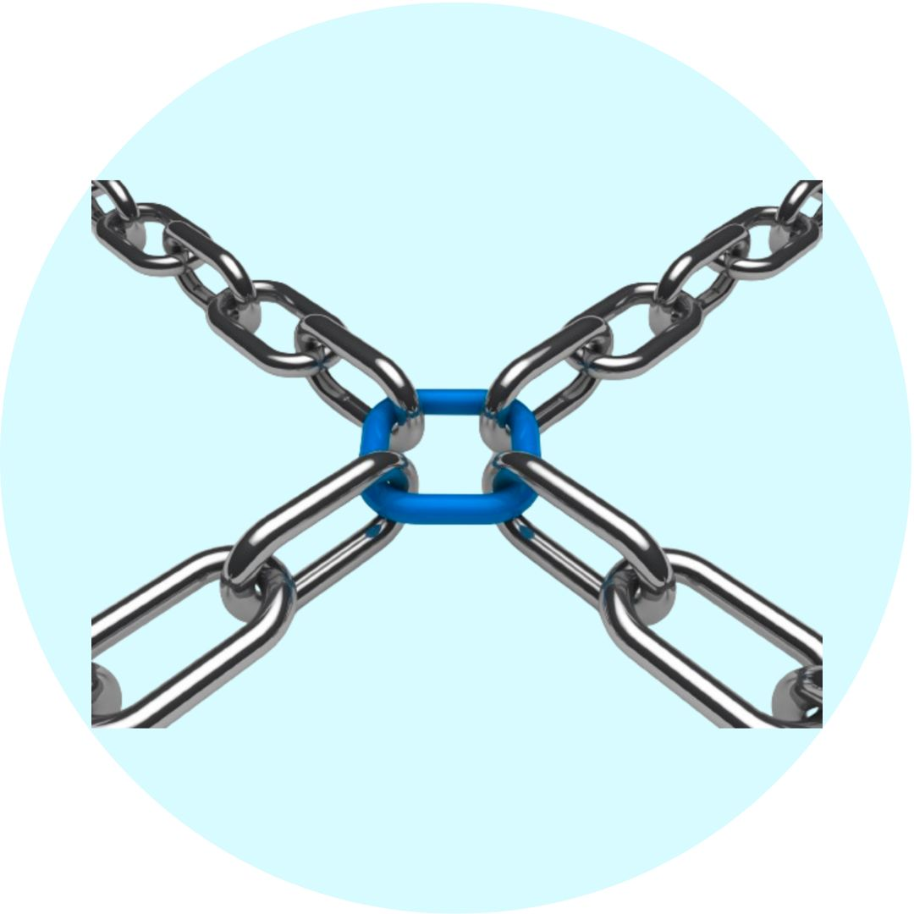

Why CBSCoin?
Quantum-Resistant Encryption: CBSCoins employ advanced quantum-resistant encryption, ensuring robust security against potential threats from quantum computing technologies.
Eco-Friendly Mining: CBSCoins use a unique consensus algorithm that promotes energy efficiency, making the mining process more environmentally friendly compared to traditional proof-of-work cryptocurrencies.
Decentralized Identity Verification: CBSCoins integrate a decentralized identity verification system, enhancing user privacy and security by reducing reliance on centralized third-party verification services.
Smart Contract Templates: CBSCoins feature a user-friendly smart contract template system, allowing users to easily create and deploy custom smart contracts without the need for extensive coding knowledge.
Dynamic Governance Mechanism: CBSCoins implement a dynamic governance model that enables token holders to actively participate in decision-making processes, fostering a community-driven ecosystem for the evolution of the cryptocurrency.

Cross-Chain Compatibility: CBSCoins support interoperability with multiple blockchain networks, allowing users to seamlessly transfer and exchange value across different blockchains. This feature enhances liquidity, reduces transaction costs, and opens up opportunities for collaboration with other blockchain ecosystems.